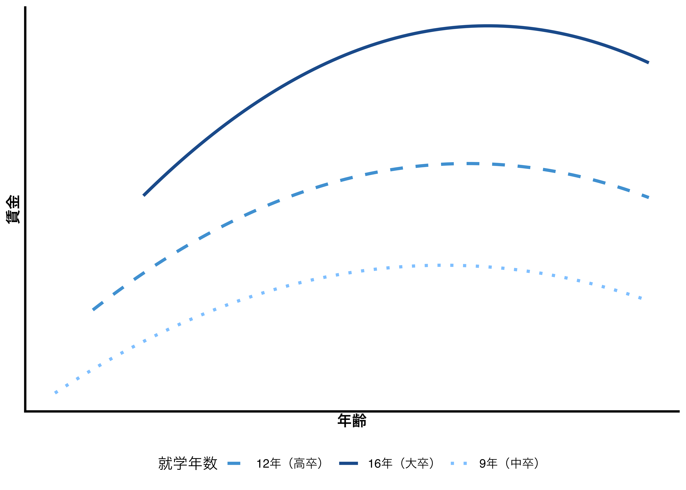
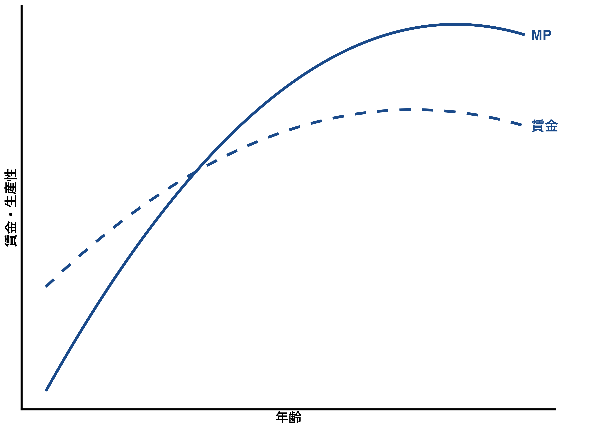
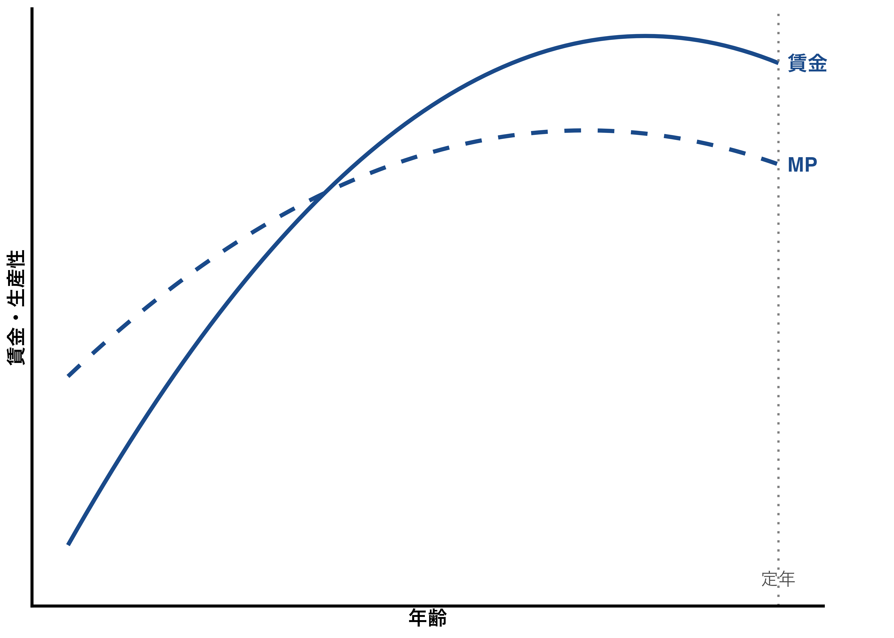
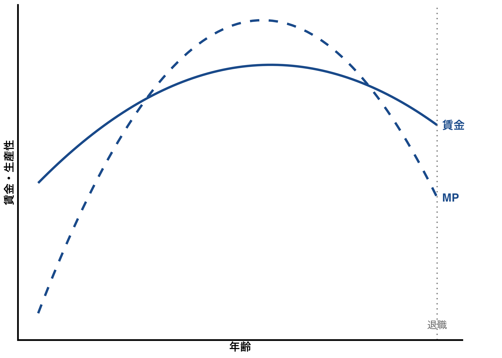
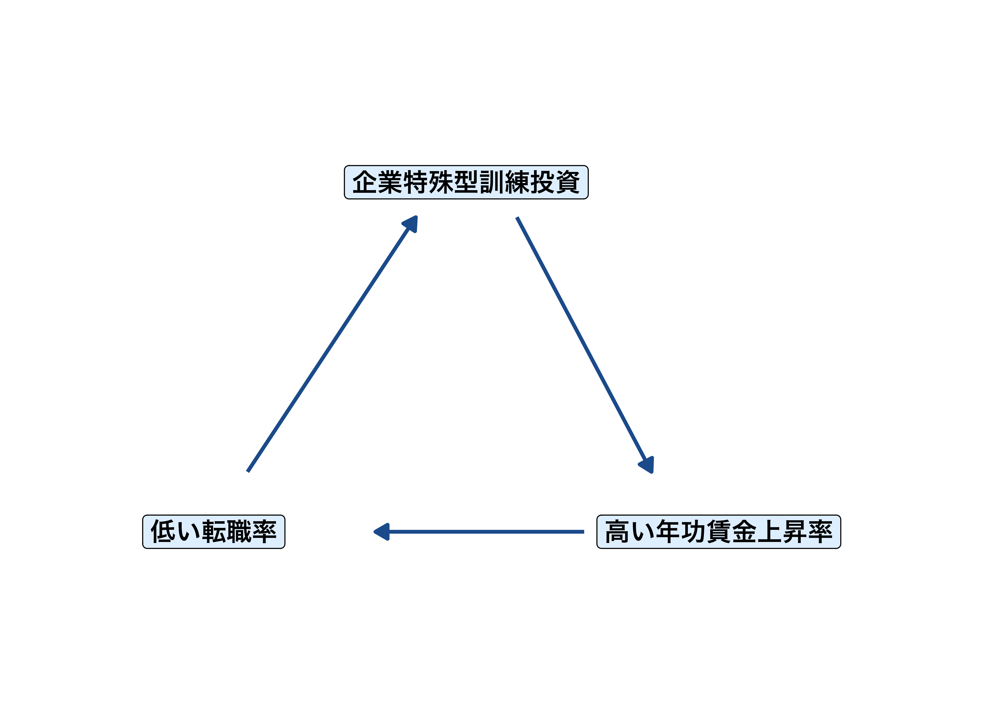
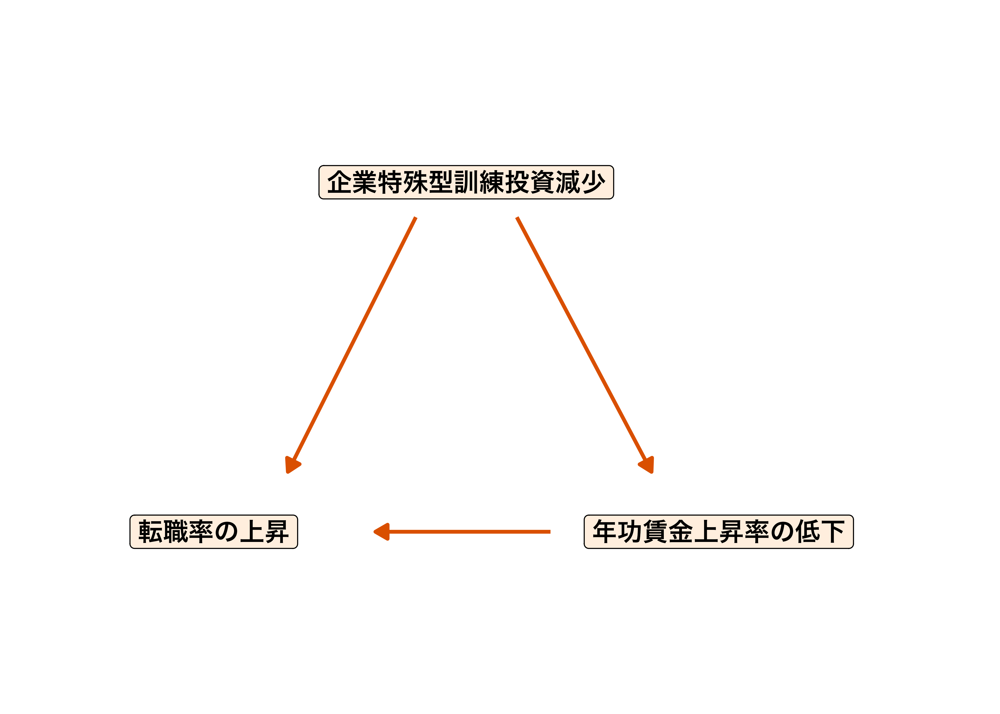
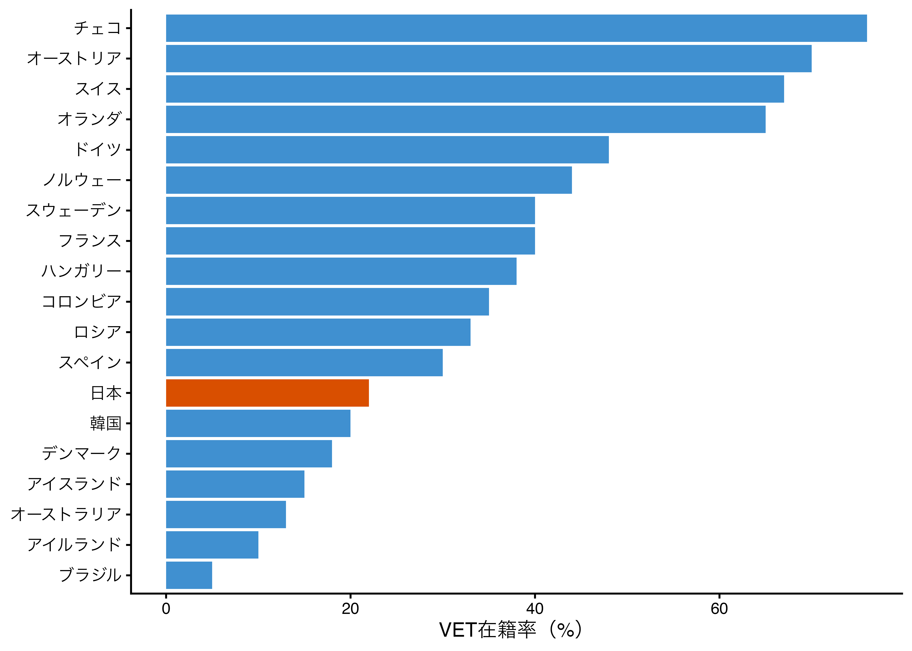

7 教育と技能形成
7.1 学習目標
- 学校教育後に技能がどのように形成されるかを理解する（OJT・Off-JT）。
- 人的投資仮説とシャーキング仮説の違いと、それが雇用継続性に与える含意を理解する。
- 一般的技能と企業特殊型技能の違いを理解し、訓練費用の負担ロジックを説明できる。
- ベッカーの2期間モデルを用いて、訓練投資の費用・便益分担を理解する。
- 職業教育訓練（VET）の意義と国際的な多様性を理解する。
- VET と普通教育の効果の違いについて、実証研究の知見を理解する。
7.2 学校教育後の技能形成
これまでの講義では、主に学校教育を通じた人的資本の蓄積に焦点を当ててきました。しかし、技能や知識の修得は、学校を卒業した時点で終わるわけではありません。就職後も、訓練や経験を通じて人的資本は継続的に蓄積されます。
ここでは、就職後の技能形成の代表的な形態であるOJTとOff-JTを整理した上で、それが生産性・賃金・雇用継続性とどのように結びついているかを考えていきます。
OJT と Off-JT
就職後の教育訓練には幅広い種類の学びが含まれますが、大きく次の2つに分類されます。
OJT（On the Job Training：企業内訓練）
- 日常の業務に就きながら行われる訓練。
- 具体的な業務に関わる企業内研修などは明確に識別できる一方、日常業務のなかで上司や先輩から仕事のノウハウを非形式的に学ぶ場合など、訓練として認識できないケースも多い。
- いわゆる「Learning by doing（仕事をしながら学ぶこと）」による経験的な積み重ねで構成されるため明確な区切りがないものの、継続的に生産性を向上させる効果があるとされる。
Off-JT（Off the Job Training：企業外訓練）
- 通常の業務を一時的に離れて行う教育や訓練。
- 在籍する企業から派遣されてMBAを取得するために経営大学院で学ぶ、英会話学校で語学を学ぶ、公認会計士や税理士などの資格取得のために専門的訓練機関で学ぶなどがその例。
Note「Learning by doing」について
「Learning by doing（やりながら学ぶ）」の考え方は、内生的成長理論と結びついた Arrow（1962）、Javanovic & Lach（1989）らによって理論化された概念です。個人や組織が生産活動を繰り返す中で経験が蓄積され、それが生産性の向上に寄与するという考え方で、OJT の持つ「暗黙知」的な学習効果を理論的に説明する基礎となっています。
就学年数と賃金カーブ
就学年数と年齢・賃金の関係を示した下図（イメージ図）を見てみましょう。就学年数9年（前期中等教育修了相当）、12年（後期中等教育修了相当）、16年（4年制大学修了相当）の3グループについて、年齢と賃金の関係を概念的に示しています。
この賃金カーブからは、次の3点が読み取れます。
- 就学年数が長い者ほど平均賃金が高い傾向にある。
- どの就学年数においても賃金は年齢とともに上昇するが、賃金の「上昇率」は年齢とともに徐々に減少する傾向にある。
- 就学年数の長い就労者の賃金がより急速に上昇し、学歴別の賃金格差は年齢とともに拡大する傾向にある。
1点目は、OECD各国を中心に世界のほぼすべての国に共通しています（第2・3回で学んだ人的資本理論・内部収益率の実証的な根拠でもあります）。
2点目は、労働者の生産性が学校卒業後も上昇を続けることを示唆しています。そこで重要な役割を担うのが就職後の教育訓練です。
3点目について、就学年数の長い就労者の賃金勾配が急であることは、教育への投資とOJTへの投資が補完関係にあることを示しています（Mincer, 1962）。
Warning
なぜ賃金は年齢とともに上昇するのでしょうか？
賃金が年齢とともに上昇することは、経験則として広く知られています。しかし、「なぜ」そうなるのかには、複数の説明が考えられます。
個人ワーク（3分）
- 賃金が年齢とともに上昇する理由を2つ以上挙げてみましょう。
- ヒント：「生産性」と「企業の意図」という2つの視点から考えてみましょう。
ペアワーク（3分）
- お互いの考えを共有し、違いを議論しましょう。
Tip
考え方の整理
大きく分けると、次の2つの仮説が考えられます。
- 人的投資仮説：年齢とともに生産性が上がり、それが賃金に反映される。
- シャーキング仮説：企業が意図的に賃金プロファイルを設計している。
どちらが正しいのか、次のセクションで詳しく見ていきましょう。
7.3 生産性・賃金・雇用の継続性
賃金が年齢とともに上昇するという事実は、なぜ雇用が継続するのかという問いにも一定の答えを出します。生産性と賃金の関係如何で雇用の継続性は変わり得ます。ここでは代表的な2つの仮説を取り上げます。
人的投資仮説
人的投資仮説（Becker, 1993）は、人が教育や訓練を受けることによって生産性が上がり、それに伴い賃金も上昇するという考え方です。第2回で学んだ人的資本理論がそのまま就職後に適用されるイメージです。

入社直後は仕事に不慣れなため、企業が新入社員研修などに投資した分もあり、賃金が限界生産価値（MP）を上回ることがある。就業年数が長くなるにつれ社員の生産力は高まり、やがてMPが賃金を上回る段階に入る。この時点から企業は入社後しばらく投資した分を回収していくのです。
一方、生産性と賃金ともに一定の年齢以降は上昇が低下すると考えられています。若年労働者のほうがより多くの人的資本を蓄積し、その蓄積量が減少するにつれてリターンも減少するためです。
シャーキング仮説
これに対して、スタンフォード大学経営大学院の教授として知られるエドワード・ラジアー（Edward Lazear）が提唱したのがシャーキング仮説（Lazear, 1979）です。
シャーキング（Shirking）とは、責任や義務などから逃れたり、仕事を避けたりさぼったりするという意味があります。ラジアーによると、生産性と賃金との関係は下図のようになります。

人的投資仮説での想定とは異なり、シャーキング仮説では入社時の賃金は生産性を下回るとします。生産性を上回る賃金を先送りすることによって、労働者が仕事を怠けることを避ける狙いがあります。「割高の賃金が獲得できることを知る労働者は、そこに行きつくまで解雇されないよう、できるだけ高く評価されるよう努めるだろう」という前提に基づいています。
この枠組みであれば企業が定年退職制度を設ける理由も明白となります。賃金が限界生産価値を上回り続けると企業は不利益を被るために、社員を怠けさせないためのインセンティブとして足りうる一定期間の後に企業は労働者に辞めてもらわなくてはなりません。
組み合わせモデル
そこで樋口（1995）が示したのが、人的投資仮説とシャーキング仮説の「折衷型」のプロファイルです。
限界生産価値と賃金の関係について、入社時以後しばらくの間は人的投資仮説が説明し、退職に近づく段階ではシャーキング仮説が説明するという考え方です。つまり、入社当初からしばらくは限界生産価値が賃金を下回る就業経験を積むにつれて限界生産価値が賃金を上回る段階に入ります。しかし更に年齢が増すと再び限界生産価値は賃金を下回ります。この後、労働者は退職を迫られることとなります。

Note3つのモデルの整理
| 仮説 | 賃金プロファイルの特徴 | 主な論者 |
|---|---|---|
| 人的投資仮説 | 入社直後は賃金がMPを上回るが、やがてMPが賃金を追い越す。生産性向上の結果として賃金が上がる。 | Becker（1993） |
| シャーキング仮説 | 入社時の賃金がMPを下回る。賃金は企業が意図的に設計した制度。 | Lazear（1979） |
| 組み合わせモデル | 入社直後は人的投資仮説、退職前はシャーキング仮説が説明する「折衷型」。 | 樋口（1995） |
7.4 技能の種類と訓練費用の分担
ここまで雇用関係が継続するなかにおける労働者の生産性と賃金の関係を見てきました。ここでは、技能の種類が生産性・賃金・雇用の継続性にどのように影響するかについて考えます。
一般的技能と企業特殊型技能
ベッカーは訓練を、General training（一般的訓練）とSpecific training（企業特殊型訓練）の二種に大別しました。
一般的技能（General skill）
General trainingにより修得された技能で、どの職場においても有効であり生産性を上げると定義されます。
- 例：タイプ技能、運転技能、計算機の使い方
- これらはどの企業に勤務しても役に立つ汎用的な技能やノウハウ
- 「持ち運び可能な技能（ポータブルな技能）」
- 初歩的なものから高度なものまで幅広い（医師・弁護士・IT高度技術者なども含む）
Note「General（一般的）」の意味に注意
日本語で「一般的」と訳されるため誤解を招きやすいですが、ベッカーが言う「General」とは「企業に依存しない」という意味です。「初歩的・平均的な技能」ではなく、「特定の企業を去っても有効な、組織や地域を越えてポータブルである技能」を意味します。医師の技能は病院・地域・国が違っても有効であり、まさに「一般的技能」の高度な例です。
企業特殊型技能（Specific skill）
Specific trainingにより修得された技能で、その技能を修得した特定の職場においてのみ生産力を発揮し、その職場を去ると価値を失うと定義されます。
- 例：企業独自の生産技術、特定企業の業務習慣や組織構造の知識、陸軍での戦車の運転技能
- 得意先の好みを熟知してそのツボを押さえることで販売や営業が成立する場合など、職場の文化・慣習に象徴されるものもある
- 職場が変わって上司が変わり、得意先が変われば少なくとも当面は生産力を発揮しない
現実にはほとんどの訓練は一般的訓練と企業特殊型訓練両方の性質を併せ持っています。しかしこの2つを概念的に分離することによって、訓練の在り方と生産性向上の仕組み、賃金の上昇、雇用の継続性など労働市場における多くの事象を分析することができます。
ベッカーの理論モデル
ベッカーモデルの概要を説明しましょう。まず雇用期間を二段階（期間）に分け、1期（労働者が採用された直後）の全労働費用を \(TC_1\)、2期の費用を \(TC_2\) とします。同様にそれぞれの各期間における限界生産価値をそれぞれ \(VMP_1\)、\(VMP_2\) とし、\(r\) を利子率とします。雇用主にとって二期間を通じて雇用関係を最適化できるのは、
\[TC_1 + \frac{TC_2}{1+r} = VMP_1 + \frac{VMP_2}{1+r}\]
の状態においてです。上記等式の左は二期間における雇用費用の現在価値、右は労働者の限界生産性の現在価値です。
まず、OJTが第1期目においてのみ行われるものとし、企業は訓練費用 \(H\) を支払うとします。すると、企業側の1期の費用総額は、訓練費 \(H\) と訓練期間に支払われた賃金 \(w_1\) です。したがって \(TC_1 = H + w_1\) と表されます。2期にトレーニングは行われないものとし、この期間の企業が負う費用は賃金と同一であり、すなわち \(TC_2 = w_2\) の状態となります。したがって、上記の均衡状態における等式は以下のように書き換えられます。
\[w_1 + H + \frac{w_2}{1+r} = VMP_1 + \frac{VMP_2}{1+r} \quad (1)\]
これを基本とし、以下で労働者と雇用者との間で訓練費用と便益をどのように共有するかを検討するためにいくつかの等式を提示します。まず、\(w_1 + H - VMP_1\) を \(G\) として置き換え、
\[G = \frac{VMP_2 - w_2}{1+r} \quad (2)\]
とします。訓練後、労働者は \(VMP_2\) の収益を企業にもたらし、企業はその労働者に \(w_2\) の賃金を支払います。したがって \(G\) は2期に訓練を受けた労働者を雇用することに伴う企業にとってのゲインを表します。
また、（1）の等式を（2）と併せて並べ換え、
\[w_1 + H = VMP_1 + G \quad (3)\]
としておきます。
一般的訓練の費用は誰が支払うのか
すべての訓練が「一般的である」と仮定してみましょう。訓練後、その労働者の限界生産価値はあらゆる企業において \(VMP_2\) まで上昇するため、企業はその労働者に \(VMP_2\) と同額の賃金を支払うことを余儀なくされます。そうしなければ個人収益の最大化を求める労働者は他社に転職するからです。したがって訓練後の賃金 \(w_2\) は \(VMP_2\) と同額となり、等式（2）における \(G\) はゼロであり、
\[w_1 = VMP_1 - H\]
となります。つまり、最初（訓練前）の賃金は、その労働者の同時点における限界生産価値マイナス訓練費用です。言い換えると、訓練を受けている期間、労働者は割安の「訓練期間賃金」を受けることにより一般的訓練費用を支払っていることになります。
一般的訓練の費用は、割安な賃金で働くことを通じて、労働者自身が負担するという論理です。訓練後の期間においては、労働者は訓練後の限界生産価値と同額の賃金を受け取ることにより訓練に対するリターンを受け取るのです。
一般的訓練でも企業が費用を負担する場合
企業が一般的訓練のスポンサーになることはあります。MBAの資格取得を企業がスポンサーするケースがその典型です。しかし、この制度を利用した社員は身に付けた技能が他社でも売り物になることに気づき、他社に転職するリスクが生じます。このリスクを回避するために、企業は資格取得後5年間在籍することを条件とするなどの対策をとる場合も少なくありません。企業特殊型訓練の費用は誰が支払うのか
上述の論理は企業特殊型訓練においては全く異なってきます。純粋な企業特殊型訓練であれば、その訓練から得られた技能価値は、労働者がその企業を辞めた時点でなくなります。結果、その労働者の他企業での賃金は訓練とは無縁に、訓練前の生産性を対象に支払われます。
企業が特殊型訓練の費用を支払う場合：訓練後に労働者が転職した場合、その企業には損失が生じます。したがって企業は「訓練後に社員が辞めないという確信が無い限り」企業特殊型訓練費用の支払いを躊躇することになります。
労働者が企業特殊型訓練の費用を支払う場合：労働者は訓練期間中に低賃金を受けることにより訓練費用を支払い、訓練後の期間において高い賃金を受け、これを回収します。しかしながら労働者側は企業が訓練後も彼を雇用するという確かな保証を持たない。もし解雇された場合、企業特殊型技能は他社に持ち込んでも価値が無いために、訓練に支払った費用全額を失うことになります。したがって労働者は企業が彼を解雇しないという確信が無い限り企業特殊型訓練への投資はしたがらない。
よって企業そして社員共に企業特殊型訓練への投資を躊躇するというジレンマが生まれます。ベッカーはこのジレンマを脱却する手段として、訓練後の賃金を工夫することにより、離職も解雇も回避でき、したがって訓練投資を促すことができる可能性を示唆しています。
社員の訓練後の賃金 \(w_2\) が次のように表されるような雇用契約を想定してみましょう。
\[\hat{w} < w_2 < VMP_2\]
\(\hat{w}\) は他社での賃金を示します。この枠組みにおいては、企業と労働者共に企業特殊型訓練が産出するリターンを獲得することができます。労働者の訓練後の賃金 \(w_2\) は他社における生産価値よりも高いが、現在の会社における生産価値よりも低い。労働者は現在の企業に勤続したほうが条件が良いため、離職するインセンティブが生じない。同様に、企業もその社員を解雇するよりも雇用していた方が有益です。企業は労働者の限界生産価値よりも低い賃金で雇用できるからです。これにより企業・労働者双方が企業特殊型訓練のリターンを得ることができ、したがって訓練後に両者が離れる可能性が理論上無くなるのです。
企業特殊型訓練が示唆すること
企業特殊型訓練においては、訓練期間中は労働者が訓練費用の一部を負担しているために限界生産価値を下回る賃金を受け取り、訓練後は他社での限界生産価値を上回る賃金を受け取ります。
この枠組みにおいては、長期雇用や終身雇用などの雇用契約を成立させる意味が深まります。なぜなら、企業特殊型訓練に投資した労働者並びに企業は、両者共に雇用契約を解消したがらないだろう、と考えられるからです。
企業特殊型訓練の費用の共同負担の概念は、労働市場における多くの事柄を説明します。
- 中途採用者よりも長く勤務する者のほうが解雇されにくいという暗黙のルール
- 長年同一の企業に勤続した社員は多くの企業特殊型技能を持っていると考えられる
- 企業特殊型訓練を経た労働者は一時解雇の後の失職期間、元の雇用主から再度リコールされるまで「待機」する傾向
また、逆の理由で、在職年数が短い社員ほど解雇される可能性が高いことにもなります。
7.5 ベッカーモデルの日本への適用
これまで、技能種別に異なる訓練負担構造とそれが影響する雇用の継続性について説明してきました。まとめると、一般的技能に比べて企業特殊型技能の占める割合が多いと、雇用のスパンは長くなり、転職は抑えられ、経営不振にあってもできるだけ解雇を避けようとします。ここでは日本の雇用慣行とベッカーモデルの関係を考えます。
日本型雇用の特色
日本の雇用の特色は、「終身雇用」とも呼ばれる長期にわたる雇用慣行にあります。日本の男性の平均勤続年数は13.5年と、アメリカの4.3年、イギリスの8.1年、ドイツの10.9年、フランスの11.1年などの他のOECD各国と比較して顕著に長いです（労働政策研究・研修機構, 2019）。
大戦後の1945年から1991年にかけての急速かつ継続的経済発展によって雇用者側において労働者の雇用を維持しようとするインセンティブが高まり、好景気とも相まって一定企業内に留まることによる確かな昇進が実現しました。このことは労働者側にとっても一定企業に留まろうとするインセンティブとなり転職率は低く抑えられました。
下図が示すように、特定企業の企業特殊型訓練を積むことによって、その職場における生産性は高くなり、年功賃金の上昇率は高くなります。年功賃金上昇率が高ければ転職へのインセンティブが低下します。転職しない者はより多くの企業特殊型訓練を積もうとします。したがって、企業特殊型訓練と高い年功賃金上昇率と、低い転職率はそれぞれの傾向を相互に強化し合う性質を有しています。

1990年代以降の変化
一方、1991年のバブル経済以後の景気後退・低迷によって、企業内訓練は減少したことが報告されています。業績不振の企業にとって訓練費用は真っ先に削減対象になりがちです。1990年代に入り、急速な技術革新が進み、これまで国内で繰り広げられていた企業間の競争は国際市場での競争へとシフトしていきました。企業における訓練の在り方や内容も変化し、企業特殊型技能の相対的減少と雇用の流動化が進んでいます。

2010年代後半から相次いで導入されている、職務内容に基づき必要な技能や経験を有する人材を雇用する「ジョブ型雇用」のニーズが増すようであれば、労使関係や職場での人的資本開発の在り方にも相応の変容が認められていくことでしょう。
Note第6回との接続：転職率と「学び直し」
第6回で学んだ「学び直し（リカレント学習）」の経済学とも直結します。転職の可能性が高まると、企業は社員の教育や訓練の費用を負担しにくくなります（ベッカーの一般的技能のロジック）。その結果、訓練の機会は企業外の「学び直し」へとシフトし、個人がコストを負担して汎用スキルを磨くという行動が合理的になります。「メンバー型からジョブ型へ」という雇用転換は、単なる採用形式の変化ではなく、人的資本投資の主体と内容の変化でもあります。
Warning
求人票からスキルを読み解こう
以下は架空の求人票（抜粋）です。それぞれの求人が求めているスキルを読み、 「一般的技能」と「企業特殊型技能」のどちらが中心かを考えてみましょう。
求人票 A｜営業職（中堅食品メーカー）
【職務内容】既存顧客（スーパー・コンビニバイヤー）への定期訪問・提案営業。 長年取引のある得意先との関係維持が主な業務です。 【求めるスキル】普通自動車免許、Excel基本操作、 当社製品ラインナップと各バイヤーの嗜好・商習慣への深い理解
求人票 B｜ITエンジニア（Webサービス系スタートアップ）
【職務内容】自社サービスのバックエンド開発・保守。 【求めるスキル】Python／Django の実務経験2年以上、 REST API 設計・実装経験、AWS の基本的な運用経験、 GitHub を用いたチーム開発経験
求人票 C｜生産オペレーター（自動車部品メーカー）
【職務内容】当社独自の自動プレス機械のオペレーション・品質チェック。 入社後に社内研修（約3ヶ月）あり。未経験歓迎。 【求めるスキル】機械操作の意欲、当社品質管理マニュアルの習得、 チームワーク。普通自動車免許歓迎。
個人＆ペアワーク（5分）
- 求人票A・B・Cそれぞれについて、求められているスキルは 「一般的技能」寄りか「企業特殊型技能」寄りかを判断する。
- ベッカーモデルに従うと、訓練費用を負担するのは誰になるか（企業 or 個人）を考える。
- さらに訓練期間中の賃金は高いか低いか、この職に就いた人の転職の可能性は高いか低いか考える。
Tip
考え方の整理
求人票 A｜食品メーカー営業
- スキルの性質：企業特殊型寄り（混合型）
- 訓練費用の負担：企業と個人で分担
- 訓練期間中の賃金：やや低め（得意先との関係構築・製品知識習得のコストを本人も負担）
- 転職可能性：低め（得意先との人間関係・商習慣は他社では使えない。転職すると蓄積した関係資本が失われる）
- ポイント：運転免許・Excel・営業経験は一般的技能だが、「各バイヤーの嗜好・商習慣への深い理解」は典型的な企業特殊型技能。両方が混在する現実的なケース。
求人票 B｜ITエンジニア（スタートアップ）
- スキルの性質：一般的技能寄り
- 訓練費用の負担：個人が負担（入社前に自己投資済み）
- 訓練期間中の賃金：高め（即戦力として採用されるため、訓練期間賃金カットが発生しにくい）
- 転職可能性：高い（PythonやAWS・GitHubはどの企業でも通用するポータブルなスキル。転職市場での価値が高い）
- ポイント：企業は「できる人」を外部から採用する戦略をとっており、訓練投資は個人（自己学習・プログラミングスクール等）が済ませている。ベッカーモデルの「一般的訓練費用は個人が負担する」論理が典型的に現れている。
求人票 C｜自動車部品オペレーター
- スキルの性質：企業特殊型技能（強）
- 訓練費用の負担：企業が負担（社内研修3ヶ月）
- 訓練期間中の賃金：低め（研修期間中は生産性が低く、企業が訓練コストを負担するため）
- 転職可能性：低い（「当社独自の自動プレス機械」の操作スキルは他社では通用しない。企業も社員も長期雇用を前提とする）
- ポイント：「未経験歓迎・社内研修あり」は企業が訓練費用を負担する長期雇用前提採用のシグナル。ベッカーモデルの企業特殊型訓練の典型例。
ここから見えてくること
- 求人票 B のように一般的技能を強く求める企業が増えているのは、技術革新とグローバル化によって企業特殊型技能の価値が相対的に低下しているためとも解釈できます（1990年代以降の変化）。
- 求人票 C の「未経験歓迎・社内研修あり」は、企業が訓練費用を負担する長期雇用を前提とした採用のシグナルとも読めます。
- 次のセクションでは、このような「どのスキルを、誰が、どこで育てるか」という問いを、職業教育訓練（VET）という制度的な視点から考えていきます。
7.6 職業教育訓練（VET）と労働市場
前半では、学校教育を修了した後の職場における技能形成（OJT・ベッカーモデル）を見てきました。後半では視点を変え、学校教育のなかで職業的な技能をどう育成するか、すなわち職業教育訓練（VET: Vocational Education and Training）の問題を扱います。
VETとは：3つの根拠
職業教育を支持する主な論拠は3つあります（Carnoy, 2023）。
- 経済的根拠：職業スキルは生産的な雇用にとって不可欠であり、経済成長を促進する。
- 社会的包摂の根拠：学術的な志向ではない若者にも、教育制度は生産的な職業生活への準備をする義務がある。
- 学習効率の根拠：抽象的な座学より実践的な職業学習を通じた方が学術的スキルも身に付きやすく、中退を減らす効果がある。
3つの論拠はいずれも説得力を持っており、教育生産関数のモデリングにも重要な含意を持ちます。一般的・学術的な教育と職業教育は、アウトカムの内容と測定方法の両方で異なります。学術的成果は国際比較テスト（PISA・TIMSSなど）で測定しやすいのに対し、職業的スキルの評価はより難しく、また教育設備（最新の機械・設備）の質が学習効果に大きく影響するという特有の課題もあります。
世界のVET比率
職業教育の位置づけは国によって大きく異なります。下図はOECD（2020）のデータに基づき、後期中等教育（15〜19歳）においてVETプログラムに在籍している割合を国別に示したものです（イメージ図）。

チェコ・オーストリア・スイスなどの中央・北欧諸国では後期中等教育の6〜7割以上がVETに在籍するのに対し、日本・韓国・アイルランドなどは相対的に低い水準にあります。
Warning
日本の職業教育についてどう思いますか？
日本では「工業高校」「農業高校」「商業高校」などの職業系高校（専門学科）や、専門学校・高等専門学校（高専）がVETに相当します。
個人ワーク（3分）
- 日本のVET（職業教育）について、あなたはどう評価しますか？
- 拡充すべき？ 現状でよい？ 縮小すべき？ 理由とともに考えてみましょう。
ペアワーク（3分）
- お互いの意見を共有し、根拠の違いを議論しましょう。
VETの主要な類型
VETの組織形態は、大きく次の2種類に分類できます。
1. 別学校型：職業教育を普通教育とは別の学校で行う（世界で最も一般的な形態）。
2. 総合学校内型：普通科高校の中に職業コースを設ける（アメリカが主な例）。
さらに別学校型の中に大きな差異があり、特にドイツ型デュアルシステムは際立った特徴を持ちます。
ドイツ型デュアルシステム
ドイツの「デュアルシステム」は、政府・雇用主・組合の三者が参加するトリパルタイト型のガバナンス構造に基づき、教育と訓練を組み合わせた国家戦略で実施されます。
- 後期中等教育修了後、多くのドイツ人（およびオーストリア人・スイス人）が職業学校と企業内訓練を組み合わせた形態に進む。
- 3〜3.5年制で、若い見習いは最初の1年に熟練工賃金の約20〜25%を受け取り、3年目には30〜35%を受け取る。
- 週に1〜2日は学校に通い、残り3〜4日は企業で実習する。
- 修了時に特定職種での技能習得を証明する国家資格証明書が付与され、他の企業での就職や独立開業にも使える。
このシステムが機能するための条件として以下が挙げられます。
- 政府・地方行政が特定の労働市場スキルに対する需要について正確な情報を持ち、かつその需要が比較的安定している。
- 訓練終了後に同じ職種で働かない場合でも（ドイツでは見習いの約40%が訓練と同じ職種に就かない）、国家資格は「労働市場での価値がある」と若者が信頼している。
- 雇用主が国家機関の技能評価と資格を信頼し、採用・訓練に積極的に参加する。
- 見習いへの賃金がトリパルタイトで決定されており、企業の訓練コストを相殺できるほど低く設定されている。
さらに、地域の商工会議所が大企業による中小企業からの労働者「引き抜き」を防ぐ役割を果たしていること、訓練しても就職ポストがない場合でも見習いを提供するという企業間の「社会規範」が存在することも、このシステムの維持に貢献しています。
Noteドイツのデュアルシステムと「一般的技能・企業特殊型技能」
前半で学んだベッカーモデルから考えると、ドイツのデュアルシステムは興味深い含意を持ちます。技能は国家認定資格としてポータブル（一般的）に設計されています。しかし訓練コストは企業が低賃金という形で負担しています。これは「一般的訓練の費用は個人が負担する」というベッカーの予測と一見矛盾しますが、地域の商工会議所による引き抜き防止ルールが機能することで、企業が一般的訓練に投資しても回収できる制度設計になっています。
アメリカ型VET
アメリカの教育モデルはドイツ型VETとは根本的に異なります。アメリカでは2013年時点で、後期中等教育学生の約20%のみが職業系コースに在籍または総合高校でキャリア教育を受けており、この割合は1990年代以降低下し続けています（Kreisman & Stange, 2020）。
職業教育（CTE: Career and Technical Education）は主にポスト中等教育レベルに移行しており、コミュニティカレッジの2年制プログラムや専門学校などが主な担い手です。
アメリカのVETの特徴は：
- 個人と家族が主なリスク負担者：どの訓練プログラムを選ぶか、就職できるかを自分で判断する。
- VETの35%以上が私立機関：財務的リスクも個人が負う面が大きい。
- 柔軟性が高い：高校・コミュニティカレッジで職業コースから学術コースへの転換が可能。
一方で、私立の専門学校でVETを修了できなかった学生や就職できなかった学生が連邦政府への学生ローン返済を求める問題も生じており、これはアメリカのVETが持つリスクの大きさを反映しています。
その他の国々
ドイツ型デュアルシステムとアメリカ型の間には、様々な形態のVETが世界中に存在します。
スカンジナビア諸国は、後期中等教育で高い割合の学生がVETに在籍しつつも、VET修了後に中等後技術教育へ進学する割合が高く、VETが高等教育への閉じた道ではない点が特徴です。
ロシア・東欧諸国は旧ソ連の大規模な職業教育システムを引き継いでおり、中学校卒業後の約40%が職業学校へ振り分けられます。ただし、その約半数はその後なんらかの中等後教育（大学進学を含む）へ進んでいます。
中国では中学校卒業時の試験（HSEE）によって約40%の生徒が職業高校へ振り分けられます。学術系高校へのアクセスが試験によって制限されているため、VETは主に低所得層・低学力層の生徒が通う教育として位置づけられており、その「ブランド」が社会的なスティグマと結びついている側面があります。
ラテンアメリカ（チリ・コロンビア・メキシコなど）では、中学校終了時の低学力をもとに高い割合の低所得層の生徒を職業系高校へ振り分けるシステムをとっています。チリでは職業系高校在学中でも大学入試を受験し、4年制大学へ進学できる仕組みがあり、早期のトラッキングによる負の影響を一定程度緩和しています。
これらの事例に共通するのは、VETの「ブランド」（社会的評価）が国ごとに大きく異なるという点です。VETの経済的・教育的価値は、制度そのものの設計だけでなく、VET修了後の中等後教育へのアクセスの広さ、労働市場との連携の深さ、そしてその社会における歴史的・政治的背景によって大きく規定されます。
VETの効果：実証研究
VETは普通教育と比べて、学習成果（学力）や労働市場アウトカム（就職・賃金）にどのような差をもたらすのでしょうか。学術的にこの問いに答えることにはセレクション・バイアスという根本的な課題があります。VETと普通教育に進む学生は、そもそも学力・家庭背景・学習動機が異なる場合が多いからです。
セレクション・バイアスとは（復習）
VET学校と普通高校の学生を単純に比較した場合、もともとの学力・家庭環境の差が結果に影響するため、「VETに通ったことの効果」と「もともとの属性の差」を区別できません。これをセレクション・バイアスといいます。これを克服するために、研究者はプロペンシティ・スコア・マッチング（PSM）、操作変数法（IV）、回帰不連続デザイン（RD）などの因果推論手法を用います。チリの事例
ファリアス（Farias, 2012）は、PSM（傾向スコア・マッチング）を用いてチリの職業系高校と普通高校の学生を比較しました。
- VET学校の学生は、同程度の8年生時点の学力・家庭背景を持つ普通高校の学生と比較して、10年生時点の数学・国語の成績が若干低く、出席率も低い傾向があった。
- 一方、12年生時点では出席率の差が消え、平均的には卒業率がやや高かった。
- 特に8年生の全国テストで低スコアだった生徒群では、VET学校の卒業率が普通高校を大幅に上回った。
- しかし、高スコア群ではVET学校が大学進学率を大きく下げる負の効果が確認された。
チリの事例が示すこと：VETは低学力・低所得層の学生の卒業・就職を助ける一方で、高学力の学生の高等教育へのアクセスを制約するリスクがある。
中国の事例
ロヤルカら（Loyalka et al., 2016）は、中国の職業系高校（コンピュータ専攻）と普通高校の学生を、操作変数法と粗いマッチング（CEM）の2つの手法で比較しました。
- 職業系高校の学生はそうでない学生よりも中退しやすい。
- 数学スキルの伸びは普通高校より統計的に有意に低い（0.3〜0.4 SD）。
- 特筆すべきは、コンピュータスキル（職業教育の核心）でも普通高校と有意差がないこと。
- 低所得・低学力層においてはさらに悪い結果。
中国の事例が示すこと：職業教育特有の技能でも、普通高校学生と差がつかないという結果は、職業教育の「生産効率」そのものへの疑問を提起する。
中欧の事例
クズミナとカーノイ（Kuzmina & Carnoy, 2016）は、PISA 2012データを用いて、早期トラッキング制度を持つ3カ国（オーストリア・クロアチア・ハンガリー）において、VET学校と普通高校の9年生から10年生にかけての学力の伸び（ゲイン）を比較しました。
- 普通教育のトラックはVETより数学・読解・科学のPISAスコアが高く、自己効力感・内発的動機付けも高い。
- しかし3カ国すべてで9〜10年生の間の学力の伸びはプラス。
- オーストリアでは操作変数の推定で、普通教育トラックのほうがVETより一貫して高い（ただし統計的有意でない）学力ゲインを示した（数学：27点 vs 16点）。
中欧の事例が示すこと：ヨーロッパの早期VETトラッキングは、学力ゲインに対する著しい負の効果は観察されず、少なくとも後期中等教育の最初の1年間については中立〜若干のプラスの効果を示す国もある。
労働市場アウトカム：短期的優位と長期的逆転
VET vs 普通教育の議論の核心は、労働市場でのアウトカムです。理論的には2つの主な論点があります。
- VETが有利な主張：職業スキルは短期的な就職率・賃金を高める。
- 普通教育が有利な主張：汎用的・学術的スキルは変化する労働市場への適応力（長期的賃金・雇用継続）を高める。
実証研究の知見をまとめると：
| 観点 | 主な知見 | 代表的研究 |
|---|---|---|
| 短期的就職率・賃金 | VET卒が優位（特に就職直後） | Golsteyn & Stenberg, 2017（スウェーデン） |
| 中期的（30代）賃金 | VET卒の優位が消失・逆転する | Hanushek et al., 2017（18カ国） |
| 長期的雇用 | VET卒の雇用優位の消失は職場ベースのVET国で速い | Choi et al., 2019（13カ国） |
| 生涯賃金（割引現在価値） | 国によって異なるが、学術教育が上回る国が多い | Hanushek et al., 2017 |
ゴルステンとステンバーグ（Golsteyn & Stenberg, 2017）は、1971〜1979年にスウェーデンの職業系・普通系2年制後期中等プログラムに入学した非常に大規模な縦断サンプルを2011年（48〜56歳時点）まで追跡しました。その結果、男性では30歳まではVET卒が高い賃金を得るが、30歳を過ぎると普通教育卒の賃金が逆転して上回ることが示されました。女性ではVETの優位は更に短かった。
ハヌシェクら（Hanushek et al., 2017）は国際成人リテラシー調査（1994〜1998年）のデータを用いた18カ国分析と、ドイツの大規模国内サンプルおよびオーストリアの工場閉鎖データを分析しました。VET卒は若い年齢では高い雇用率・賃金を持つが、中年に達すると逆転するというパターンが確認されました。この「若いうちは高く、後で低い」というパターンは、職場ベース（アプレンティスシップ型）のVET国でより強く現れました。
Noteなぜ「長期的な逆転」が起きるのか？
この「短期的優位・長期的逆転」のメカニズムは、前半で学んだ人的資本論と直結します。
- VETで習得したスキルは特定の職業に特化した「企業（職業）特殊型技能」に近い。
- 技術革新や産業構造の変化によって、その特定スキルの価値は時間とともに減価する。
- 一方、普通教育が育む汎用的・学術的スキルは「新しいスキルを学ぶ能力」として、変化への適応力が高い（一般的技能）。
- つまり、労働市場の変化が速い現代においては、「一般的技能の優位」が長期的には明確になる。
第2回で学んだ「Skill-Biased Technological Change（スキル偏向的技術変化）」もこの文脈で再確認できます。
Warning
VET vs 普通教育：あなたならどちらを選ぶ？
今学んだ実証研究の知見をふまえて、次の問いを考えてみましょう。
個人ワーク（5分）
あなたが中学校を卒業する時点に戻ったとして、以下の2つの選択肢があるとします。
- 選択肢A：工業・商業系の職業高校（VET系）に進学し、専門技術を身につけて早めに就職する。
- 選択肢B：普通高校から大学進学を目指し、汎用スキルを磨いて将来の可能性を広げる。
どちらを選びますか？また、その理由を「人的資本論・スキルの種類・実証研究の知見」を使って説明してみましょう。
グループワーク（5分）
- 選択が異なるメンバーと、それぞれの理由を共有しましょう。
- 「どんな人にとって」VETが有利か、普通教育が有利かを議論しましょう。
Tip
考え方の整理
正解はありません。ポイントは「誰にとって、いつ」有利かを考えることです。
- VETが比較的有利なケース：早期就職を必要とする家庭環境、明確な職業目標がある、学術的な学びへの動機が低い。
- 普通教育が比較的有利なケース：大学進学を視野に入れている、技術変化の速い業界を目指している、長期的なキャリアの柔軟性を重視している。
実証研究が示す「短期的なVETの優位と長期的な逆転」は、日本の文脈では次の問いにつながります。「高校卒業後の大学進学率が高い日本において、職業系高校はどのような役割を果たすべきか？」
まとめ：スキル教育の政策的含意
第7回の内容を整理します。
学校教育後の技能形成
- 就職後の技能形成は OJT・Off-JT を通じて継続的に行われる。
- 賃金が年齢とともに上昇する理由には「人的投資仮説」と「シャーキング仮説」の2つの説明がある。
- 一般的技能の訓練費用は労働者が、企業特殊型技能の費用は企業と労働者が共同で負担する。
- 企業特殊型技能への投資が長期雇用慣行を支える一方で、技術革新とグローバル化により、その構造は変化しつつある。
スキルと労働市場
- VETの国際比較から、ドイツ型デュアルシステムのような特定の制度的条件が整った場合に高い効果を発揮することがわかる。
- VETは短期的な就職・賃金に優位性があるが、長期的には普通教育・汎用スキルが優位になる傾向がある。
- どのような学生にとってVETが有益か、また高等教育へのアクセスを制約しないかが重要な政策的課題。
これらの知見は、第8回以降の「教育と経済成長」「教育と社会階層」の議論にも密接に関わります。